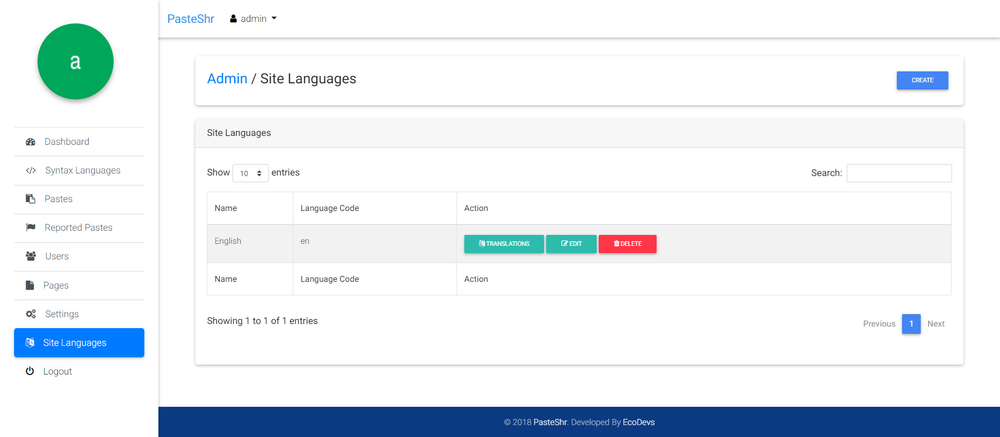
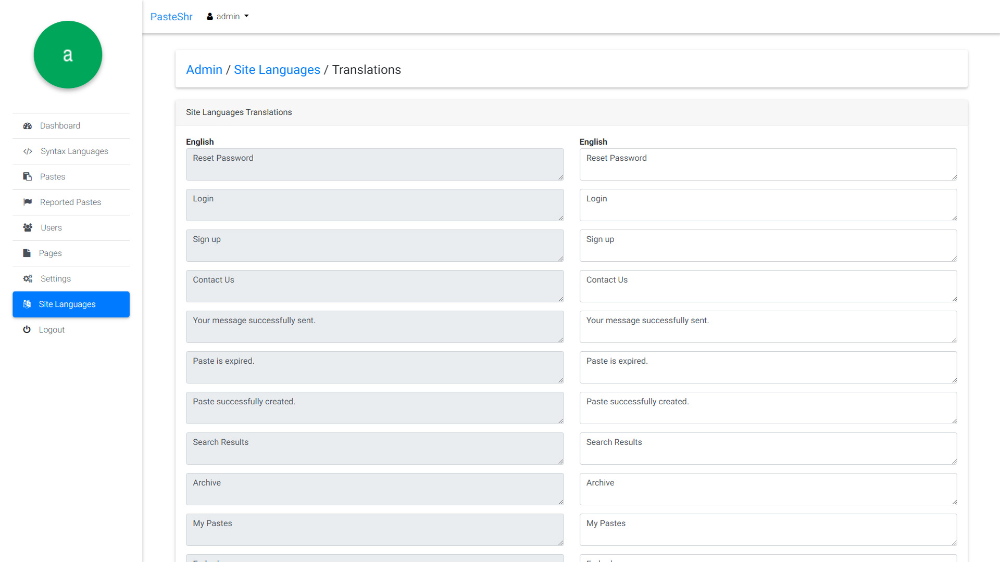

Created: 12/19/2019
By: EcoDevs
Email: ecodevs@gmail.com
Thank you for purchasing my script. If you have any questions that are beyond the scope of this help file, please feel free to email via my user page contact form here. Thanks so much!
In this page of admin panel you can see overall information about pastes, reported pastes, users etc.
In this page of admin panel you can manage syntax langauges.
In this page of admin panel you can manage pastes.
In this page of admin panel you can manage pastes which were reported by users.
In this page of admin panel you can manage users.
In this page of admin panel you can manage pages like Terms, Privacy policy, FAQ etc.
Site Languages
Site Languages Translations
In this page of admin panel you can manage site languages and it's translation.
In this page of admin panel you can manage settings like General settings, Paste settings, SEO settings, Invisible Recaptcha settings, Advertisement settings, Comments settings and Social links etc.
- Login With Facebook
Redirect Callback URI - https://yourdomain.com/auth/facebook/callback
- Login With Google
Redirect Callback URI - https://yourdomain.com/auth/google/callback
- Login With Twitter
Redirect Callback URI - https://yourdomain.com/auth/twitter/callback
Open yoursite.com/admin/login in your browser and login to using your admin credentials.
You can find the layout files in ./resources/views/front/ The files extention is .blade.php
You can edit the stylesheet from ./public/css The main style file is: style.css
You can do that from /resources/views/front/includes/ & /resources/views/front/layouts/default.blade.php
You can change it from ./public/favicon.ico
You have to get a site key from https://www.google.com/recaptcha/ Once you got the SiteKey & SecretKey, you can add it in Admin Panel > Settings > Invisible Recaptcha Settings.
You can add it in Admin Panel > Settings > Advertisement Settings.
You can do that from Admin Panel > Site Languages > Create
You can do that from Admin Panel > Site Languages > Translations
You can do that from Admin Panel > Settings > Default Site Locale
You can do that from Admin Panel > Settings > Default Timezone
Once again, thank you so much for purchasing this script. As I said at the beginning, I'd be glad to help you if you have any questions relating to this script. No guarantees, but I'll do my best to assist. If you have a more general question relating to the script, you can email us at ecodevs@gmail.com
EcoDevs